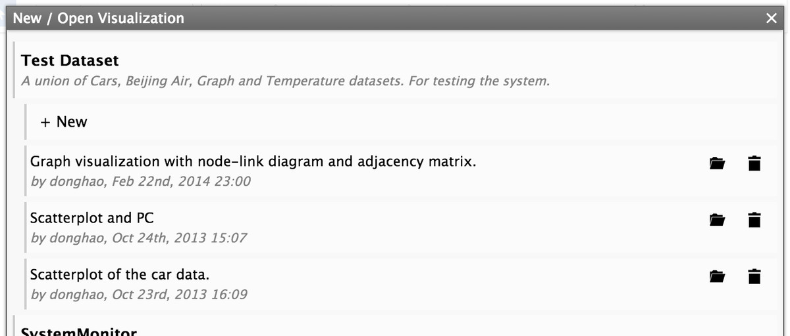
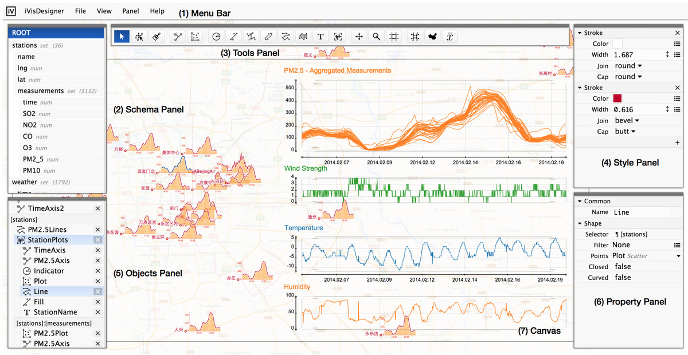
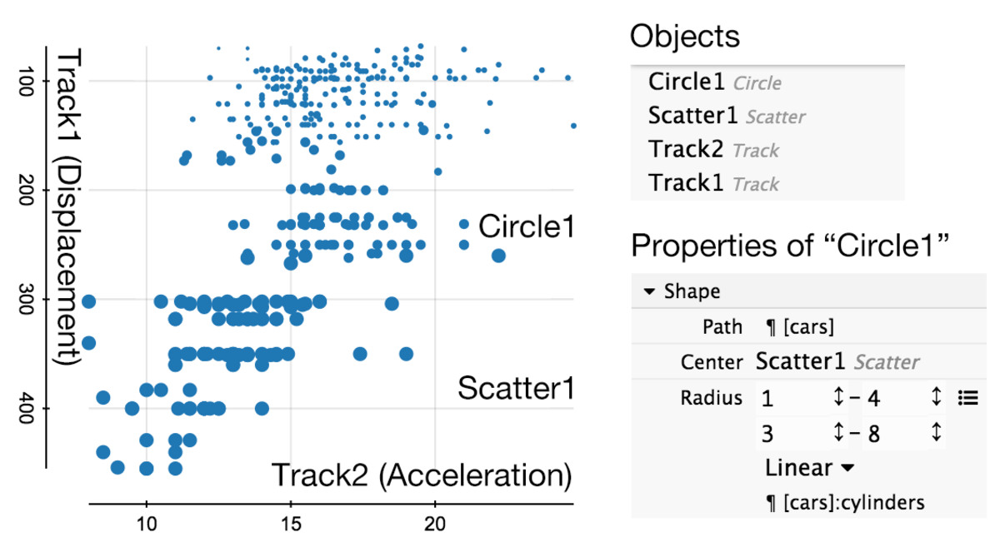
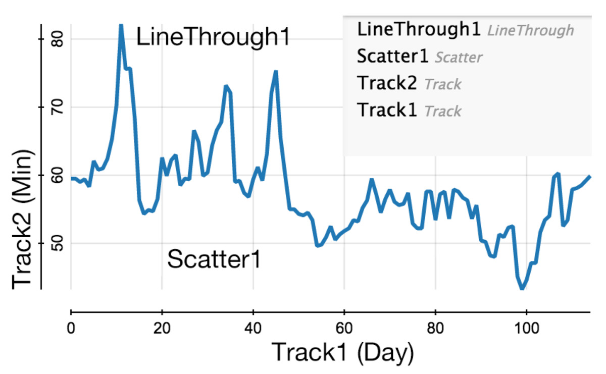
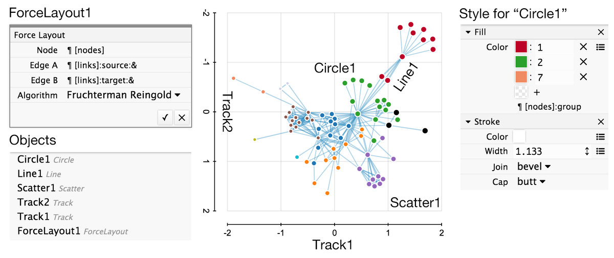

iVisDesigner stands for Information Visualziation Designer, which is a web-based system that helps you design data visualizations freely.
With expressive yet simple interactions, you can create visualization designs without programming.
In this document, we will guide you through this system.
Tutorial Video
<video width=“900” height=“600” style=“width: 100%; height: auto;” controls>
Your browser does not support the video tag.
The first thing is to load the data.
When you open the webpage for the toolkit, you will see the following dialog.

This dialog shows all the datasets and existing visualization designs for them.
You can click the “+ New” button to start a new visualization design, or click the “Open ()” button after each visualization design to load it.
We provide several datasets for you to get started, each with some example visualization designs.
User Interface
The interface of iVisDesigner consists of a menu bar, several panels, the drawing canvas and a status bar.

Schema Panel
Shows the structure of the dataset.
In this example, there are a set of stations, each station has attributes name, lng, lat, and a set of measurements. Each measurement has attributes time, SO2, NO2.
Objects Panel
A list of objects for the current visualization design.
Each object is bound to a certain data location, for example, StationPlots is under stations, that means for each station, there is a StationPlot.
Tool Panel
Tools for selecting, creating, and creating components, etc.
Style Panel
Define graphical styles for objects.
Property Panel
Set properities for objects.
You can rearrange the panels freely by dragging the thin top bar, use the “Panel” menu to toggle them, or reset to the original layout.
Drawing and Editing
In this section, we show how to create and edit a visualization design in iVisDesigner.
We start by creating visualizations using predefined templates, and then show how to build them by assembling basic elements.
Predefined Templates
There is a “Template” menu in the top of iVisDesigner’s interface.
Creating a Scatterplot: Select the “Scatterplot” from the “Template” menu, then chosse the two attributes for the scatterplot, for example, “[cars]:mpg” and “[cars]:displacement”, click the OK mark, then drag a region in the canvas, a scatterplot will then appear.
Creating a Timeline: Select the “Timeline” from the “Template” menu, then chosse the two attributes for the scatterplot, for example, “[days]:day” and “[days]:min”, click the OK mark, then drag a region in the canvas, a timeline will then appear.
Creating a Graph Visualization: Select the “Graph” from the “Template” menu, choose the nodes, for example “[nodes]”, then edges, for example “[edges]”, next the source and target attribute, for example “[edges]:source”, and “[edges]:target”, finally click OK and drag a region in the canvas, a graph will appear.
After creating visualizations from the templates, you can edit the properties of the elements, for example, setting the color and line width, moving things around.
Selecting Data
The templates are an easy way to create visualizations, here we show how to build them from the basics.
This will allow you make different designs from the templates, fully utilize your creativity.
After loading the dataset, look at the schema panel to see the structure of it.
Then drag interested items down to the object panel below the schema panel.
Next, you can start creating graphics that display the data.
Creating Objects
Please follow these steps to create objects.
Track (Axis)
To create basic charts like a scatterplot, Axes and Scatters are necessary.
Here we show how to create an Axis (another name is Track).
An Axis is only an axis, that defines positions for upcoming points. There is no points on the axis.
Select the “Track ()” tool from the tool panel.
Select an attribute from the popup panel, this is what the axis is for.
Click on the canvas for the starting and ending points respectively.
Scatter
The Scatter object can create scatterplots between axes. Like the Axis, the Scatter also provides only positions only.
Select the “Scatter ()” tool from the tool panel.
Click two axes to create a scatter between them.
Circle
To actually draw the data, one simple way is to put the Circle object on a Axis or a Scatter.
The Circle object draw a set of circles for a set of data items.
Select the “Circle ()” tool from the tool panel.
Select a set of data item(s) from the schema panel.
Click on the canvas or an axis or a scatter for the center location.
Set parameters for the circle.
In summary, to draw something, you tell the system what to show, by selecting a set of data items, then tell it where to show, the position can be a fixed location, or determined by an Axis, or a Scatter.
Line/Bar
The Line or Bar objects draw a set of Lines or Bars for a set of data items. Similar to the Circle object, but you need to specify the two end points.
Select the “Line ()”/“Bar ()” tool from the tool panel.
Select a set of data item(s) from the schema panel.
Click on the canvas or an axis or a scatter for the starting location.
Click on the canvas or an axis or a scatter for the ending location.
Set parameters for the line/bar.
LineThrough
The LineThrough object is a little bit different, it draws a polyline or a curve through a set of points in order.
Select the “LineThrough ()” tool from the tool panel.
Select a set of data item(s) from the schema panel, you should select the items that corresponds to the lines, not the points for each line.
Click on the canvas or an axis or a scatter for the locations.
Set parameters for the line.
Text
Select the “Text ()” tool from the tool panel.
Select a set of data item(s) from the schema panel.
Click on the canvas or an axis or a scatter for the anchor location.
Set parameters for the text.
Component
Select the “Component ()” tool from the tool panel.
Select a set of data item(s) from the schema panel.
Click on the canvas or an axis or a scatter for the anchor location.
Initially the component is empty, so you will not see anything. To edit a component, click it twice in the objects panel, the system will switch to component editing mode, the component will be highlighted orange.
In the component editing mode, you will see a small cross indicating the representative component, create new object on it, for example, a circle or a axis, you will see the newly created objects be under the component.
To exit the component editing mode, click the component again, the orange color will go away and the system go to its normal state.
Editing Properties and Styles
Once you have objects on the canvas, you can edit them by first selecting them with the “Select ()” tool,
and change their properties and drawing styles in the property panel and style panel.
Also, you can drag the free anchors in the canvas directly.
Moving Graphical Elements
You can also make changes to the dataset by dragging graphical elements with the “Move Element ()” tool.
Once you move a graphical element, the underlying data for it is changed, and all other objects that use this piece of data will be affected.
Example Designs
Here we show some example designs.
Basic Scatterplot

In this example, we are going to create a scatterplot to show the correlation between the “Displacement” and “Acceleration” attributes of the CarData.
The radius of the circles are used to encode the “Cylinders” dimension.
There are four objects: Track1, Track2, Scatter1 and Circle1.
To create this visualization, follow the steps below.
Create Track1:
Select the “Track ()” tool from the tool panel.
Select the “cars:displacement” attribute from the schema panel.
Click on the two endpoints for Track1.
Create Track2:
Select the “Track ()” tool from the tool panel.
Select the “cars:acceleration” attribute from the schema panel.
Click on the two endpoints for Track2.
Create Scatter1:
Select the “Scatter ()” tool from the tool panel.
Click on Track1 and then Track2.
Create Circle1:
Select the “Circle ()” tool from the tool panel.
Select the “cars” set from the schema panel.
Click on Scatter1 to create the circle.
Modify the radius of Circle1.
Select Circle1 with the “Select ()” tool.
In the property panel, click on the “” icon, and choose “Linear”.
Select “cars:cylinders” for the path attribute of the linear mapping.
Input the starting and ending values.
Basic Timeline

Here we demonstrate a basic timeline to show the temperature for each day. The underlying dataset is a time-series.
There are also four objects: Track1, Track2, Scatter1 and LineThrough1.
To create this visualization, follow the steps below.
Create Track1:
Select the “Track ()” tool from the tool panel.
Select the “days:day” attribute from the schema panel.
Click on the two endpoints for Track1.
Create Track2:
Select the “Track ()” tool from the tool panel.
Select the “days:min” attribute from the schema panel.
Click on the two endpoints for Track2.
Create Scatter1:
Select the “Scatter ()” tool from the tool panel.
Click on Track1 and then Track2.
Create LineThrough1.
Select the “LineThrough ()” tool from the tool panel.
Select “ROOT” in the schema panel. We are going to show a single line.
Click on Scatter1 to create the line-through object.
Select LineThrough1 with the “Select ()” tool.
Remove the default fill action in the style panel.
Customize the stroke action.
Graph Visualization

This example visualizes a graph dataset. The graph dataset is special because it contains references.
In this representation, nodes and edges are objects (entities) in the dataset, and the edges contains “source” and “target” attributes,
which are references to node objects.
In this example, we are going to use a ForceLayout object to layout the graph, and use the Track and Scatter objects to place the nodes (just like in the above two examples), and use the Line object with reference to draw the edges.
To create this visualization, follow the steps below.
Create ForceLayout1:
Click on the “ForceLayout ()” tool in the tool panel.
Select “nodes” for Node, “links:source” for Edge A, “links:target” for Edge B.
Click “OK” to create the ForceLayout object.
Create Track1:
Select the “Track ()” tool from the tool panel.
Select the “node:ForceLayout1:x” attribute from the schema panel.
Click on the two endpoints for Track1.
Create Track2:
Select the “Track ()” tool from the tool panel.
Select the “node:ForceLayout1:y” attribute from the schema panel.
Click on the two endpoints for Track2.
Create Scatter1:
Select the “Scatter ()” tool from the tool panel.
Click on Track1 and then Track2.
Create Circle1:
Select the “Circle ()” tool from the tool panel.
Select the “nodes” set from the schema panel.
Click on Scatter1 to create the circle.
Customize the style of the circle.
Create Line1:
Select the “Line ()” tool from the tool panel.
Select “edges” set from the schema panel.
Select the “ref” button before “edges:source”, then click Circle1, to indicate the starting location.
Select the “ref” button before “edges:target”, then click Circle1, to indicate the ending location, after that the line will be created.